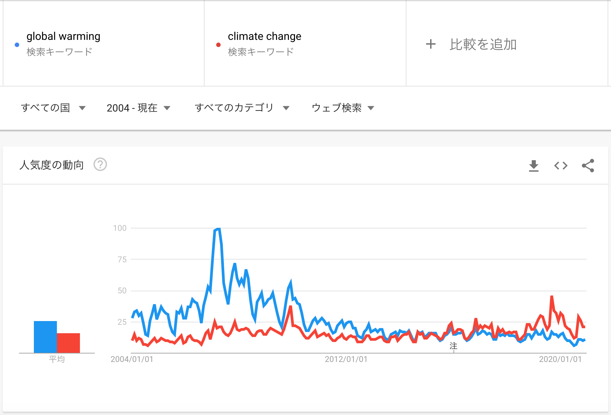
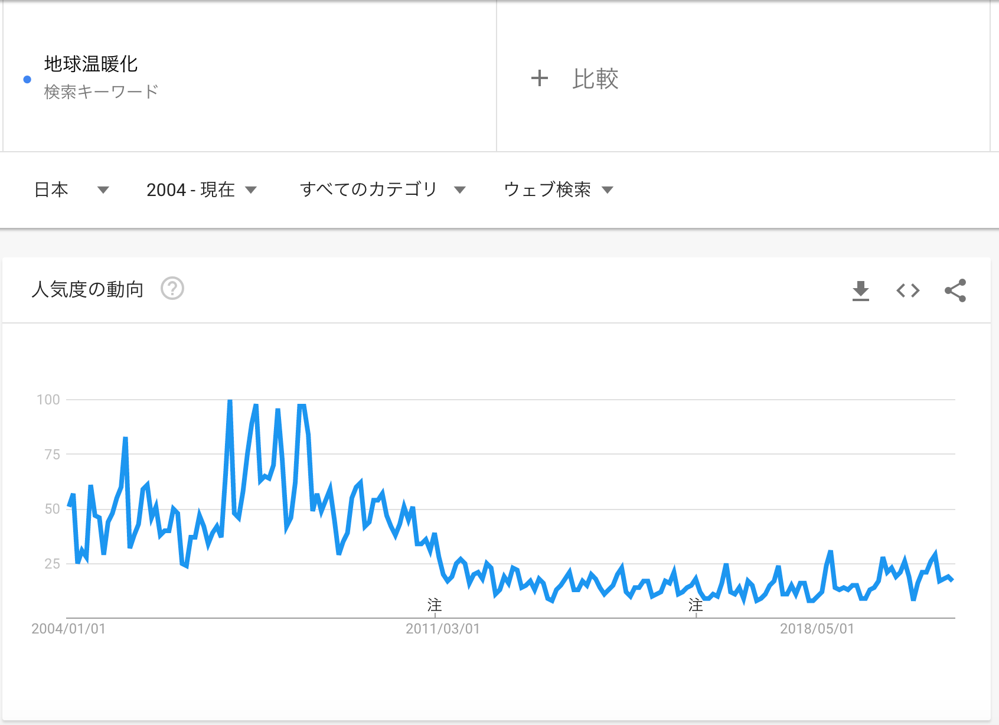
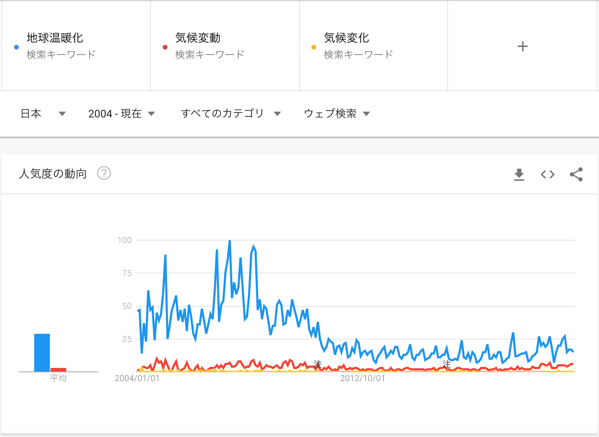
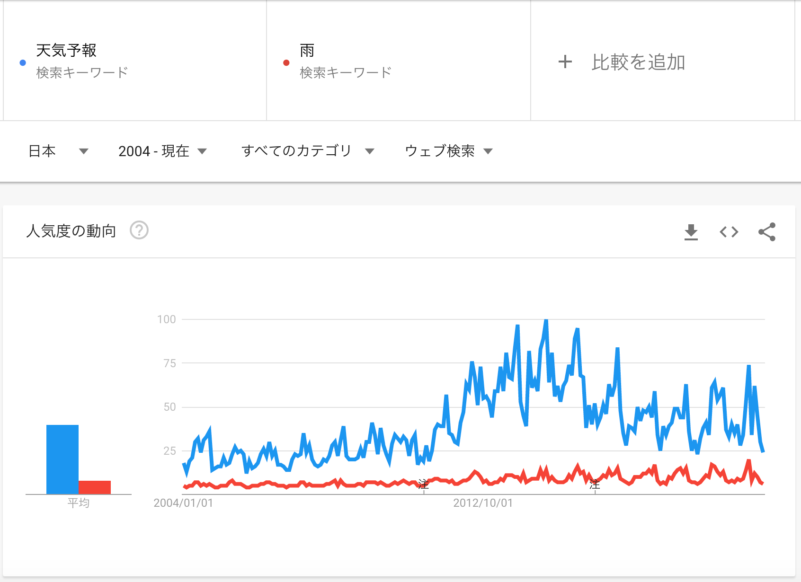
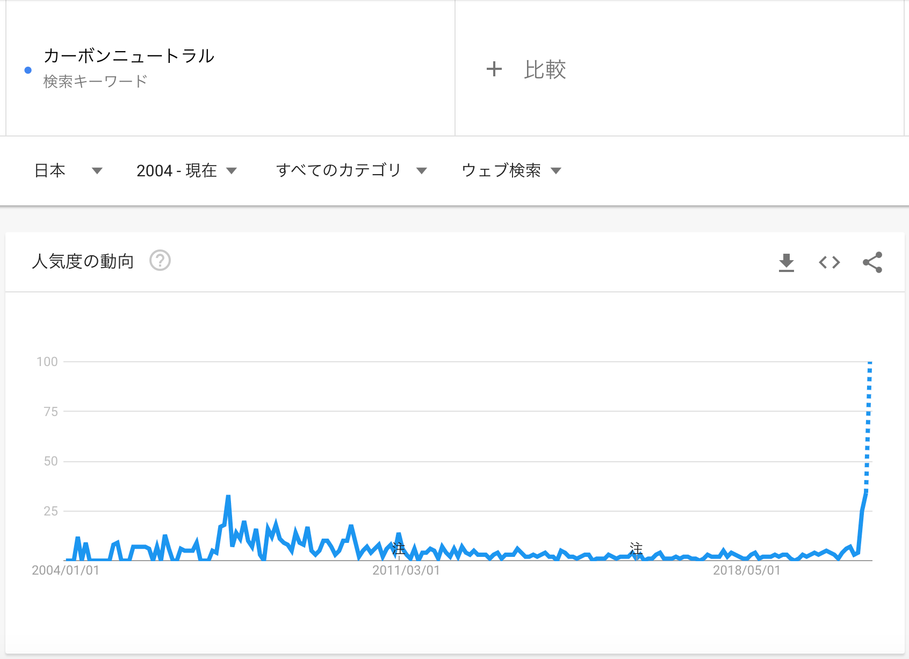
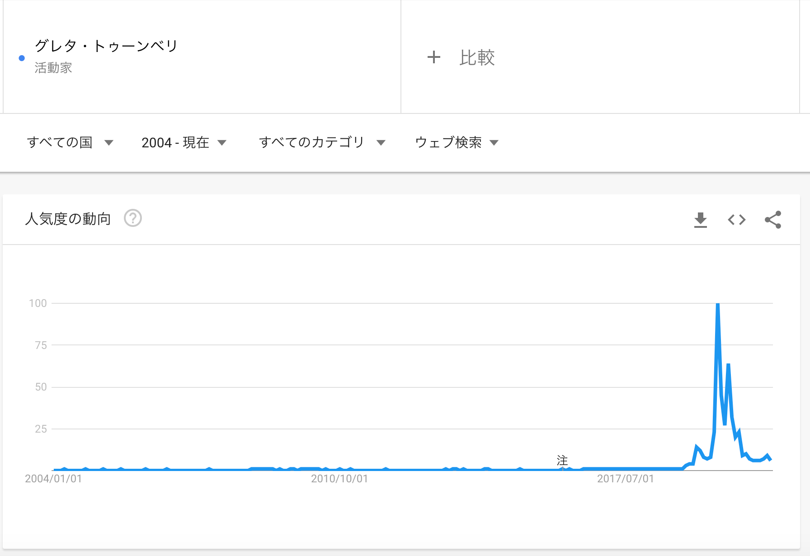

パーソナルカラー診断や、イエベ診断・ブルベ診断なるものをよく目にする。
私はメイク用品を買うときに、これまで肌色の明度しか気にしていなかったが、なるほど色相にも個性があろう。 あんまり地の肌と違う色のファンデーションを塗ると、浮いてしまうので、その参考にはなるかもしれない。
しかし、似合う色・似合わない色という概念が、私にはピンとこない。
小学生のときに授業で、友達同士に似合う色を教えあった。 私は５人中４人から、オレンジ色が似合うという評価を受けた。 せっかくだからと、オレンジ色の服をショッピングモールで探しまわったが、ただの一着も見つからなかった。 UNIQLOにさえ、ない。 当時は「自分にこの世で最も似合うはずの服」が手に入らないことを悲しんだ。 しかし、オレンジ色が本当に似合っていたのではなく、名前に「陽」が入っているからオレンジ色を提案されただけ、と推測される。 好きでもない色に固執する必要は、なかった。
友達にプレゼントを送るとき、その人に似合う色のアイテムを探す。 そんなときに私が思い浮かべているのは、その人に似合うもの、というよりその人が身につけていそうなもの。
好きな色を身につけていたら、いつの間にかその人のイメージと結びつき、その人に似合う色、になるのではないかと思う。
2020.12.19
スポーツにコンプレックスを抱えていたり、トラウマを持っている人は多い。 大学に進学して以降、そんな話をよく聞く。
私は中・高・大と運動部に所属していたし、スポーツ観戦も全般的に好き。 スポーツ全般を楽しんでいる人、という印象を持たれているかもしれない。 しかし、様々なスポーツの基本である「走る」にコンプレックスを抱いている。
先日のブログで述べたように、私は中学校で陸上部に所属していた。 しかし、いくら練習しても、速く走れるようにならなかった。 ガニ股が治らなかったので、フォームがめちゃめちゃなのだ。
コンプレックスは健在だ。 走る姿を見られたくなかったことは、大学学部でバスケ部ではなくバレー部を選んだ動機の一つである。 大学院でも、サッカー部に参加したいとずっと思っているのだが、走るのが嫌で行っていない。 テニス部には行けるのだが。 もちろん、学校の周りをランニングする勇気も出ない。
テニスで柵越えホームランを打ったり、バドミントンや卓球で空振りするのは、笑い話にできる。 さらに言えば、走るのが遅いこと自体はさほど気にしていない。 だがしかし、走るフォームだけはバカにされたくないので、あぁこれがコンプレックスというやつなんだな。
2020.12.18
「努力が実るをみたい」という希望の裏に、「どうか努力が報われるものであってほしい」という願いを込めている。
私は努力しても、望んだ成果が得られないことを、中学校の陸上部で切実に感じた。
陸上部の練習はキツいばかりで全く楽しくなかったし、人間関係もあまり好きではなかった。 それでも部活を辞めなかったのは、辞めたら学校の人間関係に支障をきたしそうという、それだけであった。 いま振り返れば、そんなこと気にしなくていいのに、と思うけど。
仕方なく続けていた部活の楽しみといえば、記録を伸ばすことだけだった。 毎日のキッツイ部活に加え、毎日家で腹筋300回やっていたので、報われてほしいと願ってもいいくらいの努力を重ねていた。
私は短距離走とか、走り幅跳びとか、ハードルの記録会に出ていた。 タイムは残酷なもので、努力が結果に反映されていないことを、くっきり示してきた。 私は陸上部としては、かなり鈍足だった。
陸上部の子に負けるのはもちろん不本意だったが、まだよい。 体力測定の50m走で帰宅部の子に負けたときには、「足の速さはそもそも他人と比べるべきではない」と言い聞かせて、自己防衛に努めたものだ。
2020.12.17
今夜は所属先の音楽祭があり、知り合いが構成するバンドの生演奏を聴いた。 zoom越しではあるが。
わずか15分、４曲の演奏ではあるが、とっても楽しかった。 曲を決めた当初は全く演奏できなかったであろうに（想像）、練習を重ね楽しく演奏できるに至り（これも想像）、その成果を発揮する現場に居合わせた（オンラインだけど）ことが嬉しかったのだ。 努力が実ることが好きなので。
スポーツでも、芸術作品でも、ノンフィクションでも小説でも、博士論文でも、長年の努力が実った様が伺えると感動する。 努力した人に報われてほしいじゃない！ 努力したら、それ相応のいいことが待っていてほしいじゃない！
映画は上映時間の制約上、努力を詳しく描くことができないので、めったに感動しない。 「ファインディング・ドリー」は例外的。
2020.12.16
数十分で手軽に書けるブログのネタを毎日探すのは、大変である。 過去の体験談を書くのが最も楽なのだが、そこに頼りすぎたくない。 というのも、ネタを生成するスピード＞ブログで消費するスピードである限り、いつかネタが尽きてしまう。 過去の体験に頼るスタイルでは、いつか破綻する。
ブログの書き方などの参考にするために、noteを時々読む。 もしネタが手詰まりになったら、noteの募集中から拝借しようと目論んでいる。
「ネタの探し方」というネタで一丁仕上がったぜ。フッフ。
2020.12.15
国境の長いトンネルを抜けると雪国であった。
とは、川端康成『雪国』の有名な一節だ。
たった数十キロ離れているだけで、その地域の積雪する頻度は全く異なる。
私の地元は年に数回、ギリギリ積もるくらいに雪が降る。 しかし、そこから数十キロ南にある高校に通う途中で、いつのまにか雪景色は途絶えてしまうのだった。 その一方で、地元から見える山は冬の間ずっと、雪化粧している。
（約？）0度を境に、景色をさっぱり変える積雪。 地球温暖化の影響を体感しやすい現象の一つだろう。
2020.12.14
最近いよいよ寒さが厳しい。 かなり厚着をしていても、朝晩に外出すると寒い。 しかし、中学生だったとき、冬の寒さはより深刻な問題だった。
あの頃はどんな寒い日であっても、指定の制服で登下校しなければならなかったからだ。 コートを着ることも許されず、一番上に着るのはブレザーである。 タイツの着用も認められておらず、ハイソックスとスカートの間は吹きさらしであった。
自転車から電車に乗り換えて10分経つまで、手がかじかんでメールを打てなかった。 足は霜焼けになった。
それを思えば、いくらでも重ね着ができる今はだいぶマシ、、、なはずだけど、やっぱり寒いのは嫌い。
2020.12.13
今日行ったレストランの店員さんが、SDGsバッジを付けていた。 SDGsバッジを付けている人に会った（ことに気がついた）のは初めてだ。 この記事のトップに出てくるような、カラフルなものだ。
SDGsバッジの購入・入手方法｜正規品はあるの？付けるメリットは？
個人的に、企業や個人がSDGsに取り組むことに賛成の立場だ。
とはいえ2019年の調査で、SDGsを聞いたことのない日本人が51%もいるなど、日本での認知度はまだまだ低い。 Global Survey Shows 74% Are Aware of the Sustainable Development Goals
自分がつけることで少しでもSDGs認知度の向上に貢献できるかと思い、SDGsバッジを買ってみた。 つける勇気が出るかどうかは、分からない。
2020.12.12
先日の交流会で、ブレークルームの名前にsomething 場所 な気象用語を割り当てようと目論んで、事前に考えていた。 結局使わなかったので、葬っておく。
グレーゾーン ティッピングポイント 熱帯 雲頂 日本のはるか南 気圧の谷 逆転層 大気の窓 予報円 吠える40度 狂う50度 絶叫する60度
2020.12.11
zoom交流会をホストしたので、工夫したこと、上手くいかなかったことをメモしておく。 参加者は30人強、時間は２時間。 参加者の世代はバラバラで、仲良い人も初対面の人もいた。
オンラインなので、参加者全般の満足度は検討つかない。 よかったら感想をお聞かせください。 極度につまらないと感じた人は離脱しただろうから、気にしすぎない。 私は楽しかったので、よしとする。
一人一人が自己紹介する時間はとらず、事前に記入してもらった自己紹介アンケートを、チャットで共有した。 会に活用されたかは分からない。 私は眺めるのが楽しかったので、これもよしとする。
乾杯の挨拶のあと、20分毎のブレークアウトルームを回す方式にした。 各部屋は5-7人になるように設定。 気象学会の若手会が同様の方式で楽しかったので、マネした。 毎回メインセッションに戻るだけ、は味気ないので、数人にメインセッションで話してもらうよう、お願いしておいた（サークルの宣伝、退職の挨拶、記念撮影）。
ルームのメンバー振り分けが、最大の困難かつ反省したい点だ。
ルームのメンバーを、zoomにランダムに分類してもらうと、同じようなメンバーが集まってしまうという問題があるようだ。 Zoomのブレイクアウトルームのシャッフル度合いを上げる また、せっかく色々な世代が集まる交流会だったので、各部屋に様々な方がいるよう配置したかった。
出欠が△になっていた方が10人以上いたため、事前にメンバーを割り振ることはしなかった。 代わりに、参加者がルーム間を自由に移動できる機能を活用したかったのだが、技術的・心理的ハードルが高くて上手くいかなかった。
私の設定ミスで、初めの方は参加者に移動する権限を与えられていなかった。 参加者が動けるようにするためには、割り当てを手動でやる必要があった（と思ったので）、部屋を作り替えるたび必死に割り当てていた。 ブレークアウトルームの管理
参加者をみな共有ホストにしてしまえば、みな自由に動けたかもしれない。 それも、全員がメインセッションにいる間でなければ変更できないが。 また、そもそも各参加者のzoomがあるversion以上でないと、ルーム間の移動ができない。
技術的に可能でも、部屋の移動はためらわれるようだ。 まぁそうだよね。
私一人だけの部屋を作って、名前を「ほった（誰か来ないかな〜）」にしたり、チャットに「寂しくしてるんで誰か来てください」と書いてみたけど、誰も来なかった。 まぁそうだよね。
二次会に同世代だけが残ったところで、「一回以上移動してください」とお願いしたときは、みな移動してくれた。
自由に移動、を重要視するなら、Remoなど他のツールを使った方がよさそうだ。 zoomの、一定時間ごとにルームが強制終了する方式も好きだが。
最後に、会の裏で参加者とチャットしていたので、様子を伺ったり、お願いごとできて助かった。
2020.12.10
昨日はGoogle Trendsを使って、「地球温暖化」の検索数が00’に比べ10’に下がっていた、という図を出した。周りの人からこのトレンドについて
という意見をいただいた。両方たしかに。
ところで「global warming」「climate change」で世界中を対象に調べると、次のとおり。

やはりglobal warmingのピークは00’sにあることが気になる。「global warming」より「climate change」が使われやすくなっている傾向も見える。
2020.12.09
せっかくなので、前々記事で言及したGoogle Trendsを使って、自由研究してみよう。 本記事で見せるデータは、対象地域を日本、対象期間を2004-現在として、2020年12月8日に検索した結果である。
解釈が適切かどうか、全く自信はない。
ツッコミ歓迎というか、突っ込んでほしいから公開している。
まず安直に、検索キーワード「地球温暖化」の推移。

00’に比べ、10’では明らかに人気度は低い。
「地球温暖化」が他のキーワードにとって変わられた可能性を考えたが、「気候変動」「気候変化」を合わせて表示した結果は次の通りで、そういうわけではなさそうだ。

気象全般に対する関心が低下している、あるいはGoogle Trendsのサンプリングではそう見えるのかもしれないとも考えたが、「天気予報」「雨」のトレンドは次のようになっている。

00’より10’の方が、むしろ人気度は高い傾向にある。 ちなみに年周期の変動が卓越しているが、毎年夏にピーク・冬（12月くらい）に底となる。 2004年１月から2020年12月まで、月毎の人気度をCSVデータでダウンロードできるので、定量的な解析もできそうだ（しない）。
ここまで雑な考察ではあるが、地球温暖化に対する関心は低くなっている、と言えないこともないこともないこともない、かもしれない。
菅総理が所信表明で口にした「カーボンニュートラル」はうなぎ上りだが、今後定着するのだろうか。

2020.12.08
「気候変動への関心について、Google Trendsを使って自由研究するぞ〜！」と意気込んでいたが、当然のごとく内閣府による世論調査が行われていた。
「地球温暖化対策に関する世論調査」の概要を読んだが、なかなか興味深い。
調査間の単純な比較は行えないと注意書きされているが、2016年当時の方が2007年よりも、地球環境問題に対する関心は下がっていることが伺える。
ほとんどのアンケート項目で、世代毎・性別毎の集計結果が比較されていることに着目したい。 このような比較から、アンケート回答者は地球温暖化対策の情報にどこでアクセスするのか、どこでアクセスした情報に影響を受けるか、推察できないだろうか。
地球環境問題に対する関心度を調べた項目では、アンケート対象者のうち最も若年層にあたる、18~29歳の関心がもっとも低い。 若者こそ将来地球温暖化による影響を受ける当事者であるにも拘らず。 一方で、対策についての認知度は、18~29歳が30~39歳を上回る。 若い世代は学校教育を受けたばかりであること、が影響しているのだろうか。
驚いたのが、ほとんどの項目で性別差が顕著であることだ。 男性の方が女性よりも、地球環境問題に対する関心が高く、その影響や対策についての認知度も明らかに高い。 たとえば
あなたは，昨年，フランスのパリで開催された国際会議「ＣＯＰ２１」で採択された， 温室効果ガス削減などのための新たな国際的な枠組みである「パリ協定」を知っていますか。この中から１つだけお答えください。
という質問に対し、「内容まで知っている」（回答候補の中で、もっとも認知度が高い選択肢）と回答した割合は男性が11.2%、女性は3.3%だ。
世代別&性別毎に集計をとると、どうなるのだろう。 学校教育へのアクセスの違い、は差の一部を説明するだろうが、ここまで顕著な差を説明できるのだろうか。
今後，気候変動への対処に関する知識や情報を何によって提供されたらよいと思いますか。
という質問に対しては、テレビの広報が88.4%と最多だった。 しかしながら、あらゆる世代でテレビの視聴時間は、女性の方が男性よりも長いのだ。 令和元年度情報通信メディアの利用時間と情報行動に関する調査報告書
「女性の方が地球温暖化問題について認知度が顕著に低いこと」を踏まえると、テレビ以外の広報が重要なように感じた。
2020.12.07
昨日のブログの疑問「さて、気候変動対策について国民の意識はどのように変遷してきて、これからどのように変わっていくのだろうか」を調べたい。
しがない大学院生が、どうしたら世論調査などできるのか。 こういうときに頼りになるのはそう、Google先生だ。
Google Trendsというサービスがある。 これを使えば、特定のキーワードが検索された頻度、の2004年以降の変遷を調べることができる。 また、対象を全世界にすることもできるし、特定の地域に絞ることもできる。
トレンドは正規化されている。 たとえば”The”を調べると、次のようになる。
ある言葉が使われ始めた時期を調べることも、できそうだ。 スウェーデンの環境活動家「Greta Thunberg（グレタ・トゥーンベリ）」の検索結果は次のようになる。


2020.12.06
少し前だが、菅総理大臣が10/26に行われた所信表明演説で、次のように述べている。
わが国は、2050年までに、温室効果ガスの排出を全体としてゼロにする、すなわち2050年カーボンニュートラル、脱炭素社会の実現を目指すことを、ここに宣言いたします。
これは、安倍政権が目標としていた「2050年に80％削減」「今世紀後半のできるだけ早い時期に実質ゼロ」よりも、野心的なものだ。
さらに菅総理大臣は12/4に行われた記者会見で、次のように述べている。
このことを実行に移すにはやはり国民の皆さんの理解、今の質問にありましたように、必要だというふうに思っています
菅首相が会見 臨時国会が事実上閉幕へ(全文2)環境投資に2兆円基金創設
さて、気候変動対策について国民の意識はどのように変遷してきて、これからどのように変わっていくのだろうか。
2020.12.05
積読リストを集計したら、100件近く積み上がっていた。 ほとんどは論文メモなので、abst読んで「なんか違うな、終わり」になると思うが。
『蜜蜂と遠雷』と『スラムダンク』は友人におすすめされて、読むと約束したものだ。 約束したのは３ヶ月以上前ですが、もちろん読む気ありますよ！ 年度内（年内とは言えない）には必ずや。
2020.12.04
授業レポートの課題になっていたので、Tokyo Forum 2020 Onlineの１日目を聞いた。
世界中から集まった登壇者は著名なようで、楽しみにしていた。 しかし、議題テーマが広すぎるためか具体的な話が少なく、全般的に聞きどころが分からなかった。 そんな中でも、20時から23時までがんばって聞いたので、興味深いと思った話題を３つをあげる。
なぜなのか？
軽く検索したところ、アフリカに輸入される車の多くが日本産のようである。 ちょうど、経済産業省がガソリン車をなくすよう取り組んでいる、というニュースを見たところだった。 “脱ガソリン” 2030年代半ばに新車販売すべて「電動車」へ
そのうち、電動車が輸出されるようになるんだろうか。 国内の政策転換が、海外にも直接的に影響するのだと、思った次第だ。
大気汚染や雇用創出がキーワードになるようだが、ロジックが分からなかった。
これらの議題について、気が向いたら追加で調査する。
2020.12.03
AGU行き帰りの飛行機では映画を観た。
ファインディング・ドリーのエンディングで感動していたら、Siaの歌う『unforgettable』が流れた。 癖のある（褒めている）歌声が気に入り、以来よく聴いている。
Chandelierはコマーシャルでも使われているので、聴いたことある人が多いだろう。
2020.12.02
AGU(American Geophysical Union) Fall Meeting 2020という学会が、もうすぐ始まる。 （もう始まってる？）
サンフランシスコで開催されたAGU 2019に参加してから、一年たったのだ。 その頃は現地参加以外、選択肢になかった。
長距離移動は精神的・肉体的に負担が大きい。 飛行機代と宿泊費が莫大で、なんだか申し訳なかった。 帰ってきたときは時差ぼけに加え、飛行機に乗り遅れられない緊張でろくに寝れなかったことを引きずり、ひどい寝不足だった。 おまけに飛行機内や空港は知り合いまみれで、常に気が休まらなかった。
そこまで遠くには、もうわざわざ行きたくない。
一方で、今年はオンライン開催されるが、深夜に英語の発表を聴きにいく気にならない。
2020.12.01